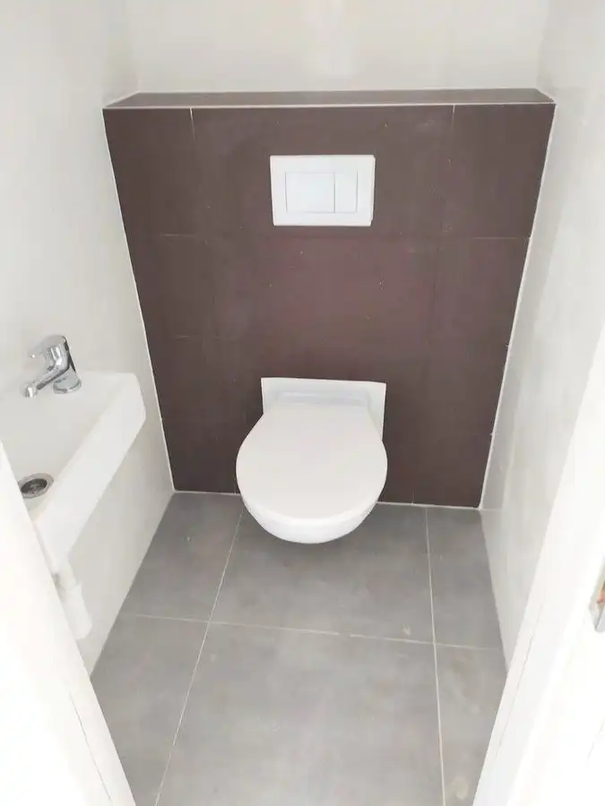
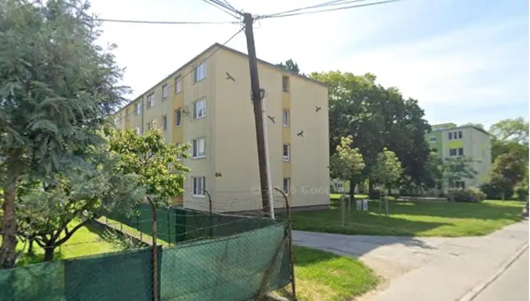

Prenájom 5-izbového rodinného domu s garážou, Moravany nad Váhom
Moravany nad Váhom
- Dispozícia4-izbový
- Plocha200 m²
- Vlastníctvoosobné
O nehnuteľnosti
2638 - V tichej časti, v slepej uličke obce Moravany nad Váhom na skok od Piešťan, ponúkame na prenájom priestranný 4 izbový rodinný dom v novovybudovanej zástavbe rodinných domov, s terasou a balkónom na pozemku o výmere 303 m
Rodinný dom postavený v roku 2010 má plastové okná, plávajúce podlahy, keramickú dlažbu, sadrokartónové stropy, zateplenú fasádu.
Dispozícia:
Prízemie: Zádverie, chodba so schodiskom, kuchyňa, obývacia izba s výstupom na terasu a do záhrady, izba, kúpeľňa so sprchovým kútom, technická miestnosť, vaňou a práčkou, garážové státie.
Poschodie: chodba, tri izby, kúpeľňa, WC, šatník, balkón.
IS: elektrika, obecný vodovod, kanalizácia, plyn
Podmienky nájmu:
RD sa prenajíma so zariadením. Nájomné sa platí mesiac dopredu. 1.200,-€/mesiac + energie, depozit 1.200,-€
Tichá lokalita s dostatočným súkromím, len 5 minút od Piešťan, veľmi dobrá občianska vybavenosť obce.
RD je voľný!!!
Pri kontaktovaní emailom, Vás prosíme, uvádzať na Vás i telefonický kontakt.
Kontakt:
VAŠE REALITY s.r.o.
Profesionálna realitná kancelária s 15-ročnou históriou a 10 pobočkami na Slovensku. Člen Realitnej Únie Slovenskej republiky.
Predávate/kupujete svoju nehnuteľnosť sám, ale netrúfate si na všetky fázy realitného obchodu? Radi Vám pomôžeme tam, kde si nie ste istý.
Na skoré stretnutie s Vami sa teší náš tím -
VAŠE REALITY s.r.o.
- člen Realitnej Únie Slovenskej republiky.
Parametre
| Rozloha pozemku | 303 m² |
|---|---|
| Zastavaná plocha | 120 m² |
| Úžitková plocha | 200 m² |
| Počet poschodí | 1 |
| Počet izieb | 4 |
| Vlastníctvo | osobné |
| Odvoz odpadu | áno - separovaný |
| Voda | verejný vodovod |
| El. napätie | 230/400V |
| Plyn | áno |
| Kanalizácia | áno |
| Internet | wifi |
| Vykurovanie | vlastné - plyn |
| Balkón | áno - 1 |
| Terasa | áno - 1 |
| Pivnica | nie |
| Garáž | áno - 1 auto |
| Parkovanie | áno |
| Inžinierske siete | áno |
| Postavené z | Ytong |
| Zariadenie | zariadený |
| Zateplený objekt | áno |
| Predzáhradka | nie |
| Okná | plastové |
| Terén | rovina |
| Prístupová cesta | asfaltová cesta |
| Novostavba | áno |
| Dátum zverejnenia | 15. 4. 2025 |
Kde to je
Mohlo by Vás zaujímať

Rodinné domy 1 000 €Prenájom 4-izbovej novostavby typu bungalov, Moravany nad Váhom Moravany nad Váhom 4-izbový120 m² 179406 - Ponúkam na prenájom novostavbu 4-izbového, moderného rodinného domu, typ bungalov, zastavaná plocha 140 m2 plus terasa 20 m2, v atraktívnej…
BytRezervované10 82 500 €Nová cena...Na predaj - 1 izbový byt 32m2-Piešťany Piešťany 1-izbový32 m² 2724 - Ponúkame na predaj 1 izbový byt o výmere 32m2. Nachádza sa na prízemí v 3. poschodovom panelovom bytovom dome. Byt je v pôvodnom stave bez…